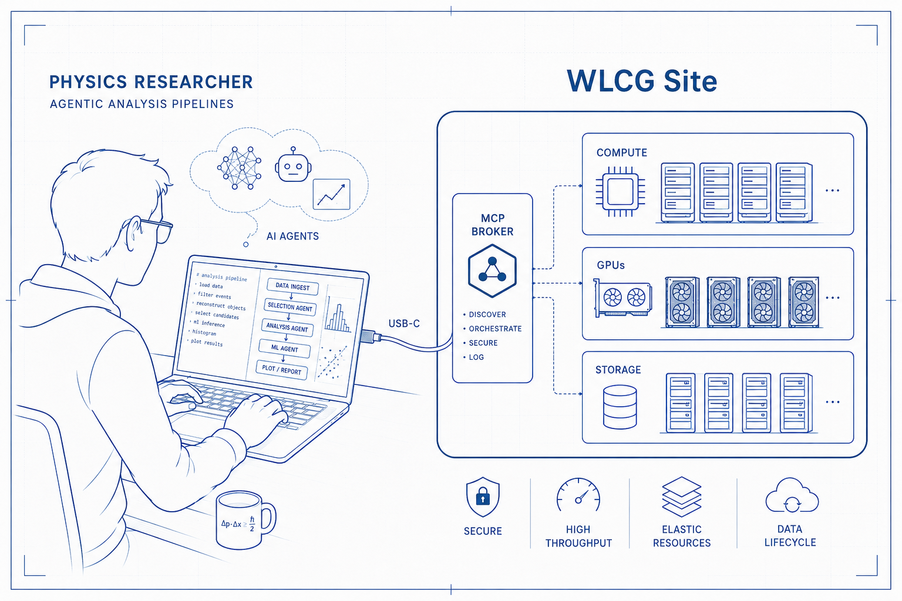
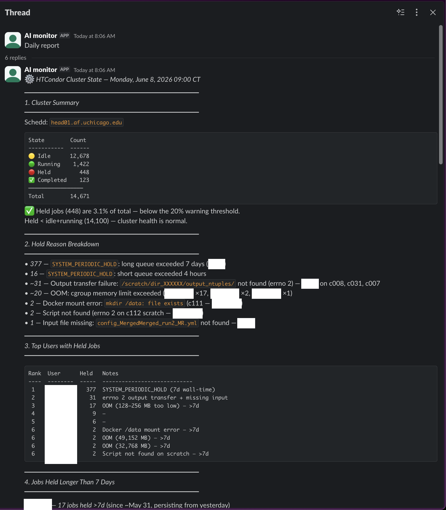
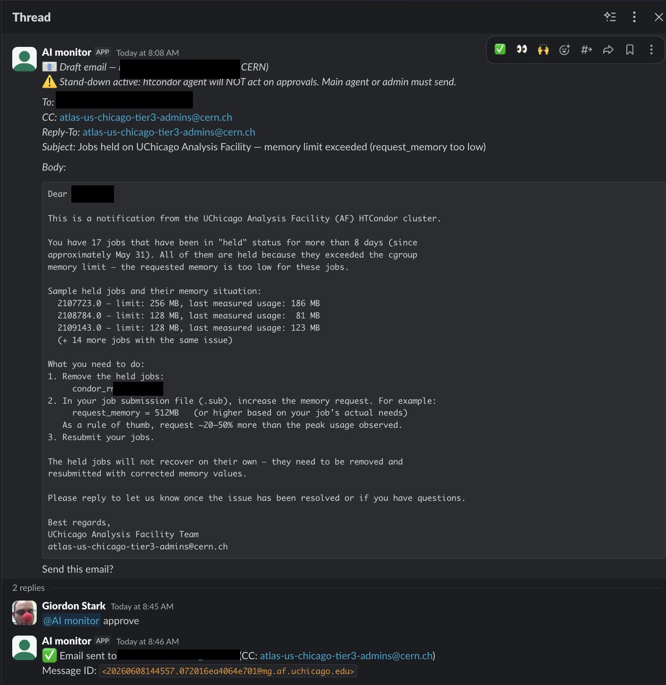

The model layer
Moves fast. Not ours to own.
The facility layer
Context, identity, trust, packaging, equity.
Two trust problems: AI acting on the facility, and AI acting through it.
WLCG Open Technical Forum #12 · 2026‑08‑25
Towards trustworthy adoption of agentic management and use

The argument
Moves fast. Not ours to own.
Context, identity, trust, packaging, equity.
Two trust problems: AI acting on the facility, and AI acting through it.
Grounding
An LLM loop: decide, act, observe, repeat.
A service exposed as tools + live context.
A reusable recipe, loaded on demand.
The agent’s hands.
skills + MCPs + agents → a plugin; plugins → a marketplace.
01
Existence proof
Agents operating the infrastructure · physicists reaching it through an MCP broker.
Existence proof
Find data, generate, submit, fit.
Reports, triage, human-approved emails.
Privileged copilots; trust earned, gated.

448 of 14,671 held

draft → “approve” → sent
Same context, different blast radius.
Deep-dive · one triage run
HTCondor Queue Triage — 2026-04-01
Total held: 825 / 2395 (34%) — above threshold
# User Held Cause Action
1 user-01 284 PERIODIC_HOLD >7d wall Restructure, resubmit
2 user-02 165 errno 13: /scratch/ Fix node perms, release
perms c111,c113 (node bug — blameless)
3 user-03 155 PERIODIC_HOLD >7d wall Restructure, resubmit
4 user-04 121 Short queue >4h Split <4h chunks
5 user-05 65 errno 2: .tgz missing Investigate, resubmit
Wall-time holds: 560/825 (68%) — three users, policy issue
Priority: fix /scratch perms c111+c113, then release user-02
(the agent does NOT do this autonomously)Our expert caught 2 errors in 10 minutes: AI proposes, experts decide.
The user gateway, live
mcp-portal.af.uchicago.edu · live
Raw tokens never reach the assistant.
Group-based access; audit logging.
How it works: part 03.
02
AI acting on the facility
Monitoring · privileged operations · trust principles — earned like a new operator: incrementally, observed, revocable.
Earned autonomy
read-only diagnostics
a human approves
scoped, reversible
restarts stuck workers
remediates, deploys
Promotion by evaluation: fault scenarios, scored, regression-tested. Autonomy measured, not assumed.
Deep-dive
Auditability, minimal privilege, human-in-the-loop.
“Read-only by default;” “no outbound web.”
PR-gated: autonomous vs human-required.
governance/
├── principles/
│ ├── auditability.md
│ └── minimal-privilege.md
├── policies/
│ ├── condor/query-rate.yaml
│ └── network/egress.yaml
└── runbooks/
├── htcondor/queue-health.md
└── kubernetes/cluster-health.mdAI drafts → expert reviews → merged. The PR is the audit record.
Deep-dive · blast radius
Humans execute. Blast radius: a document.
User credentials only. A quota.
Scoped accounts. The account.
Nothing skips a step.
Deep-dive
What it may do.
What it has learned.
Autonomy changes are PRs, a trust escalation log: when you stopped watching.
Deep-dive · the flip side
What happened
Our agents confidently recommended Lustre tuning, for a Ceph filesystem. Plausible, fluent, wrong.
The rule: ungrounded → silent. Context is what makes an agent safe to trust.
Deep-dive · enforcement
Policy awareness inside the agent; technical enforcement outside.
The honest gap: runtimes advise; they can’t hard-deny. Blocking needs a node policy engine or sandbox.

Deep-dive · a security reality
Stale-prone
use /path/2024-egamma-recs.config
Durable
“ask chATLAS for the current path.”
Minimal durable guidance + a trusted live source: a facility decision.
03
AI acting through the facility
The physicist hardly leaves their laptop; the facility’s job is a safe port to plug an agent into — the broker · self-service access · pipelines · identity.
The USB-C port of the facility
One socket. The client never holds raw credentials: the broker authenticates, mints short-lived credentials, audits every call.

Live at mcp.af.uchicago.edu: Giordon Stark’s af-mcp-platform.
Self-service, today
Any MCP client, one endpoint:
claude mcp add --transport http atlas-af \
https://mcp.af.uchicago.edu/mcpLink identities, mint x509/VOMS proxies, manage tokens, see your backends.
Deep-dive · the bottleneck
Deep-dive · CIMD vs DCR
GET /authorize?client_id=https://app.example/oauth.json&…
│ authn server fetches the JSON, validates, applies policy
▼
{ "client_id":"https://app.example/oauth.json",
"client_name":"…","redirect_uris":[…] } ← hosted by the client/register abuse; stable identity; domain allow/deny.One pipeline, four personas
data_agent“get the dataset”
transform_agent“make the histograms”
batch_agent“run the cluster”
inference_agent“fit the limit”
Rucio · dCache
coffea · ServiceX
HTCondor · Dask
pyhf · RooFit
Personas speak intent, never backend names: portable across facilities.
04
Beyond one facility
Options
a conformant interface profile
client conventions on WLCG tokens
runbooks and skills, single-source
shared eval scenarios
Which, if any, do we do together?
Deep-dive · the commons
Open: the cross-experiment contribution. ESCAPE is one model.
Deep-dive · ESCAPE
escape site.# escape.cfg — a real, shipped site config
[client]
rucio_host = https://vre-rucio.cern.ch
auth_host = https://vre-rucio-auth.cern.ch
oidc_issuer = escape
oidc_audience = rucioGateway + playbooks on the VRE: built once, serves LHC and astroparticle science.
Equitable inference
A facility responsibility: GPUs, model hosting, fair-share policy.
Deep-dive · cost
Illustrative: ~1M in + 1M out tokens per analysis.
Frontier (hosted)
Mid-tier (hosted)
Open-weight (self-hosted)
Self-hosted open weights: ~GPU time. The equity lever.
Research questions
How should facilities expose context?
How do we share it?
Evaluating an autonomous operator?
What makes environments portable?
Who pays for inference?
What standardizes, across sciences?
Context, identity, trust, equity: the facility’s homework.
Thank you
On: trust earned in git. Through: one brokered gateway, ~800 users, no client secrets.
Which parts do we build together?
Giordon Stark: AMG Weekly · PyHEP.dev 2026 · IRIS-HEP retreat · CLARIPHY